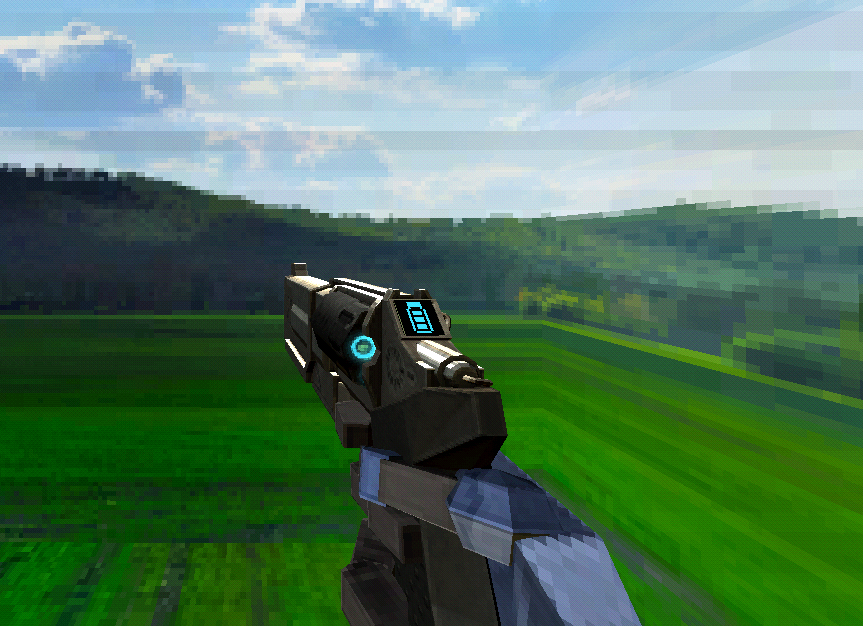
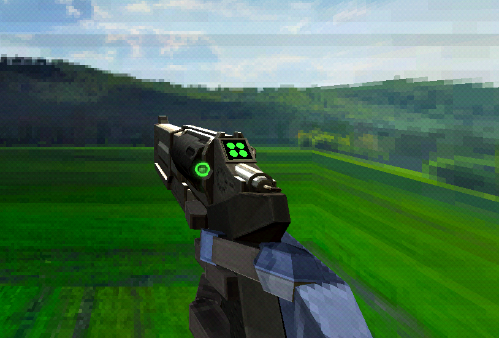

The Piercing Revolver
The Piercer Revolver appears to be an energy-powered railgun-pistol hybrid, with a futuristic metallic texture and look. Located near this weapon’s hammer equivalent is a small screen that indicates the cooldown of its alternate fire. It has lights on its screen, cylinder and its barrel, giving off a neon blue glow.

Marksman Revoler
The Marksman Revolver appears almost identical to the Piercer Revolver, but has neon green lights as well as a different interface that indicates the amount of available coins. The display also indicates how long until each coin recharges, and makes an audible "ding" noise when one is available again.